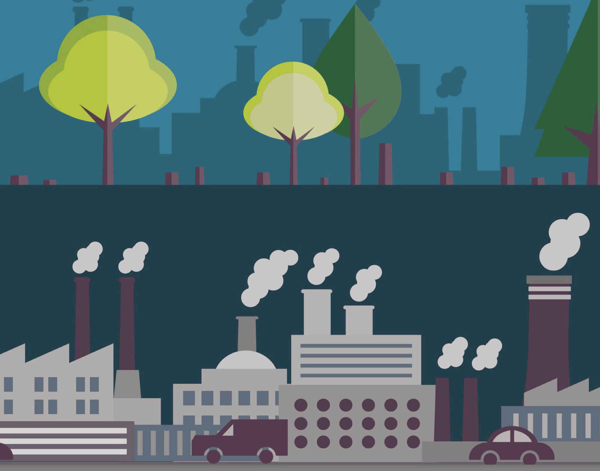

About Us
Forestfire:
This is a collaboration among Royal Forest Department, Uninet and Webster University Thailand.
Parameters:
Click the link below:
What is PM 2.5 and how does it get into the air?
PM stands for particulate matter the term for a mixture of solid particles and liquid droplets found in the air. Some particles, such as dust, dirt, soot, or smoke, are large or dark enough to be seen with the naked eye. Others are so small they can only be detected using an electron microscope. Particle pollution includes:
• PM10 : inhalable particles, with diameters that are generally 10 micrometers and smaller
• PM2.5 : fine inhalable particles, with diameters that are generally 2.5 micrometers and smaller.
How small is 2.5 micrometers?
Think about a single hair from your head. The average human hair is about 70 micrometers in diameter – making it 30 times larger than the largest fine particle. Sources of PM These particles come in many sizes and shapes and can be made up of hundreds of different chemicals. Some are emitted directly from a source, such as construction sites, unpaved roads, fields, smokestacks or fires. Most particles form in the atmosphere as a result of complex reactions of chemicals such as sulfur dioxide and nitrogen oxides, which are pollutants emitted from power plants, industries and automobiles.
Source: United States Environment Protection Agency
What is Fire Radiative Power?
Forest Fire

Fire Radiative Power is the rate of emitted radiative energy by the fire at the time of the observation. The fire intensity can vary mainly in relation to the moisture content of the combustible material, the wind, air temperature, humidity and slope. Active Fire is often a spatially explicit digital raster map indicating of presence or absence of fire, and can also be provided as spatial coordinate pairs. Fire Radiative Power is expressed in units of power, such as Watts (W) and the unit of measuement for FRP is kg m-2.
Source: Radiative power of wildfires
What is Carbon Dioxide?
Carbon Dioxide
Carbon Dioxide or CO2 is a greenhouse gas that is natural and harmless in small quantities, but as levels rise it can affect productivity and sleep. Most commonly produced indoors by the air we exhale, CO2 levels concentrate indoors with less ventilation. Forest fire emissions are a significant source of carbon dioxide (CO2), not only affecting its interannual variability but also biogeochemical cycles with consequences for climate.
Sources: Carbon Dioxide /Carbon Dioxide
Data Source
ECMWF is the European Centre for Medium-Range Weather Forecasts.
They are both a research institute and a 24/7 operational service, producing global numerical weather predictions and other data for our Member and Co-operating States and the broader community. The Centre has one of the largest supercomputer facilities and meteorological data archives in the world. Other strategic activities include delivering advanced training and assisting the WMO in implementing its programmes. They operate two services from the EU’s Copernicus Earth observation programme, the Copernicus Atmosphere Monitoring Service (CAMS) and the Copernicus Climate Change Service (C3S). They also contribute to the Copernicus Emergency Management Service (CEMS).
Source: ECMWF